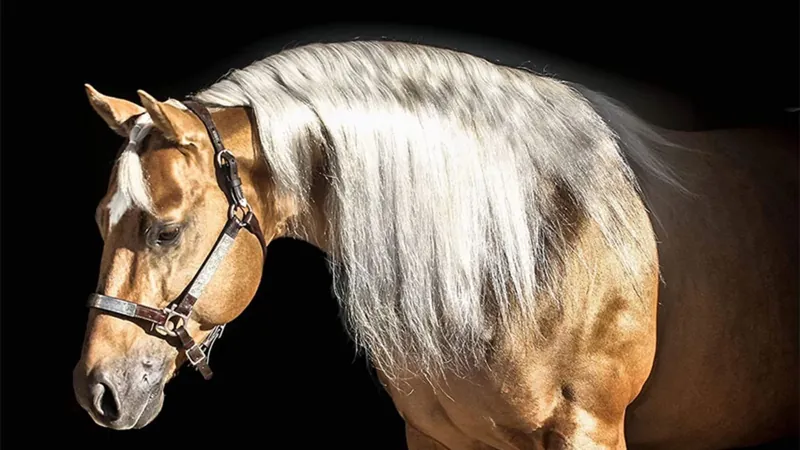

Chico Whiz é um garanhão de Rédeas com nove anos de idade e pelagem palomino, carrega um banco genético inigualável, tendo animais como Topsail Whiz.
O garanhão já faturou mais de US$ 80 mil em competições nos EUA.
Filho e neto de campeões, entre eles Topsail Whiz, que fez história ao atingir a marca de US$ 13 milhões em ganhos como reprodutor